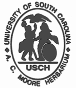

The A. C. Moore Herbarium
Collections Database
The A. C. Moore Herbarium Collections Database began in 2005 as part of an effort to keep
track of the growing collection. In April 2008 the old database was retired and the existing records were
transferred to a new software system (Specify 5). This
conversion allowed for the creation of an online search feature which was first available in May 2008. Following
another system upgrade in February 2010, data were migrated from Specify 5 to Specify 6, and the original online
search feature was decommissioned. For a short while, data access was provided through a custom designed web
interface. However, the extensibility of this search feature was severely limited. In an effort to improve the
quality and accuracy of the data we provide, we are now offering access to the most up-to-date record information
through the Flora Caroliniana portal. In
partnership with other member institutions of the
Consortium of South Carolina Herbaria, our goal is to provide visitors a rich interactive experience with access
to the best sources of botanical information in South Carolina.
The database is an important tool that helps the herbarium staff manage the collection. We can now track synonymies
and new determinations based on expert review. We are also able to keep track of loaned material received from, or sent
to, other herbaria. Thus, the collections database is similar to a card catalog in a library. But since the data
collected contain a variety of information in addition to the plant material, it is also a useful research tool. For
instance, a simple query of the database can generate a list of specimens collected from a particular location, or just
as easily, a list of all collection localities for a particular plant species.
As part of our cooperative efforts with other 'Plant-Minded' organizations like the South Carolina Department of
Natural Resources - Heritage Trust Program and
the South Carolina Exotic Pest Plant Council the
database also contains a field for the status of rare, threatened and endangered species and for exotic species that are
considered invasive.
Currently over half (76,000) of the specimens in the collection have been entered in the database. This number
consists primarily of South Carolina material. However, databasing efforts have now expanded to include Southeastern
flora, the rest of the United States and international collections (this also includes cultivated material and
special collections).
|